SAR Atlas 演示场景
给药物化学家看的八个完整用例。每个场景从一个实际问题出发，写明操作步骤、工作台给出的结果，以及它刻意不做的推断。截图全部来自真实运行的新版工作台，数据是已整理的 ALK 案例：洛拉替尼发现论文与两份 Pfizer 专利，归在预置调研「ALK 大环系列 · 辉瑞」中。
截图日期：2026-10-03测试：491 项通过运行方式：本机服务，离线
截图的数据来源。截图在离线环境中拍摄，没有查询任何外部数据库，也没有读取专利公开页面。证据表、跨专利关系和台账都是仓库中已整理的数据（按专利 PDF 转录，尚未经过独立化学家复核）。场景 6 中的“具名确认”是截图脚本在临时台账里做的演示操作，不改动仓库数据。场景 8 的抽取器是模拟的，输出第一行写明。需要联网的功能见文末，没有附截图。
演示前准备
python -m pip install -r requirements-agent.txt
python -m phase0.sar.serve --port 8766 --ledger-db artifacts/ledger.sqlite
终端出现 Open http://127.0.0.1:8766 后打开 http://127.0.0.1:8766/，运行服务的窗口保持打开。--ledger-db 让复核结论能保存；不加时复核队列只读。旧版页面在 /classic（专利检索、靶点入口）和 /classic/evidence（六步工作流）。
场景 1 · 首页与调研概览
从一个专利号开始一项竞对调研
“情报提醒我辉瑞公开了 WO2013132376A1。它和我们在跟的系列有什么关系？下一步该看什么？”
操作
- 首页输入框填
WO2013132376A1，不用选类型。
- 提示条显示“识别为专利公开号 · 已在调研「ALK 大环系列 · 辉瑞」中”，点“开始检索”或“打开该调研 →”。
- 在概览页从上往下看：统计卡片、家族时间线、下一步、跨家族关系。
看什么
- 输入框自动识别专利号、SMILES、靶点名和 ChEMBL ID；SMILES 先用本机 RDKit 解析，确认能解析才当作结构。
- 调研范围：2 个专利家族（优先权 2010-05-04 至 2012-03-06）、1 篇论文、35 条结构记录 / 271 条观测，其中 2 项为“未测”。
- 具名确认（L3）为 0，卡片直接链到复核队列。
- “下一步”由分析结果自动算出：补测建议第 1 位是 6f 的细胞活性；默认噪声阈值待化学家确认。
- 跨家族关系分三栏：可核查事实 3 条、研究假设 1 条（未署名）、证据缺口 3 条。
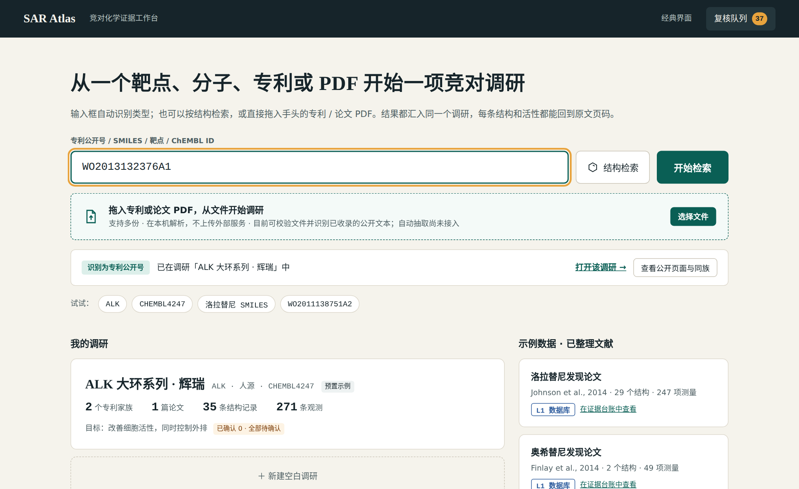
首页。一个输入框、一个 PDF 入口、我的调研和示例数据集。识别结果给出两个去向：打开所在调研，或在经典界面查看公开页面与同族。
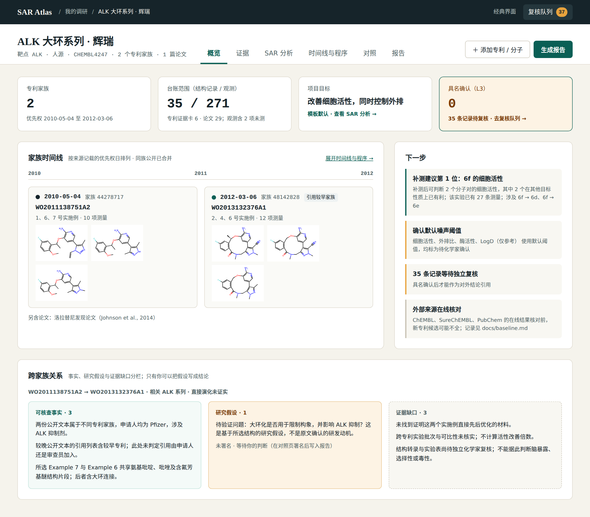
调研概览。时间线按来源记载的优先权日排列，同族公开合并；较晚家族带“引用较早家族”标记。
讲解要点
“调研”只记录一组文档、项目目标和署名判断，每个数字都在打开页面时从证据台账读取，不会和台账不一致。两份专利的关系标题是“相关 ALK 系列 · 直接演化未证实”：引用关系是事实，“大环化是否用于限制构象”只是待验证的假设。
场景 2 · 证据表与 A/B 对照
竞品专利里到底测了什么，两代之间能不能比
“两份专利各测了哪些实施例、哪些值？早期的 Example 7 和大环的 Example 6 放在一起，活性提高了多少？”
操作
- 切到“证据”页签，两份专利默认展开，论文 29 行默认收起。
- 勾选 WO2011138751A2 Example 7（成为 A）和 WO2013132376A1 Example 6（成为 B）。
- 底栏显示“跨文档 · 只并列原始值”，点“查看 A/B 对照 →”。
看什么
- WO2013132376A1 三个实施例的 WT ALK 酶 Ki 都是
<0.200 nM，用虚线框显示，不参与排序和倍数。
- WO2011138751A2 Example 6 的两项细胞 IC50 写“未测 · 原表空白”，不填零。
- 数值按原文精度显示（2.90、0.620），每行带来源等级、质谱校验和结构所在的 PDF 页码。
- 色阶只在同一文档、同一实验列内比较，只用于以 nM 报告的活性列。
- 对照页：WT Ki 0.536 nM 对 <0.200 nM，写“B 为限定值，不比较”；其余三项写“跨文档，只并列”。
- RDKit 性质差：cLogP 3.97 → 2.68，可旋转键 5 → 0，环数 3 → 4。
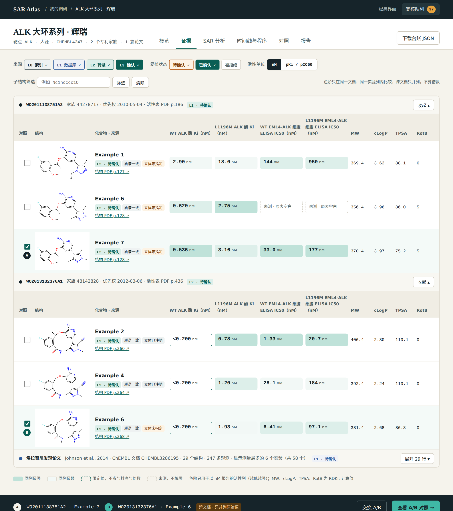
证据表。每个专利一个分组带：家族号、优先权日、活性表页码。勾选后行首出现 A / B 标记。
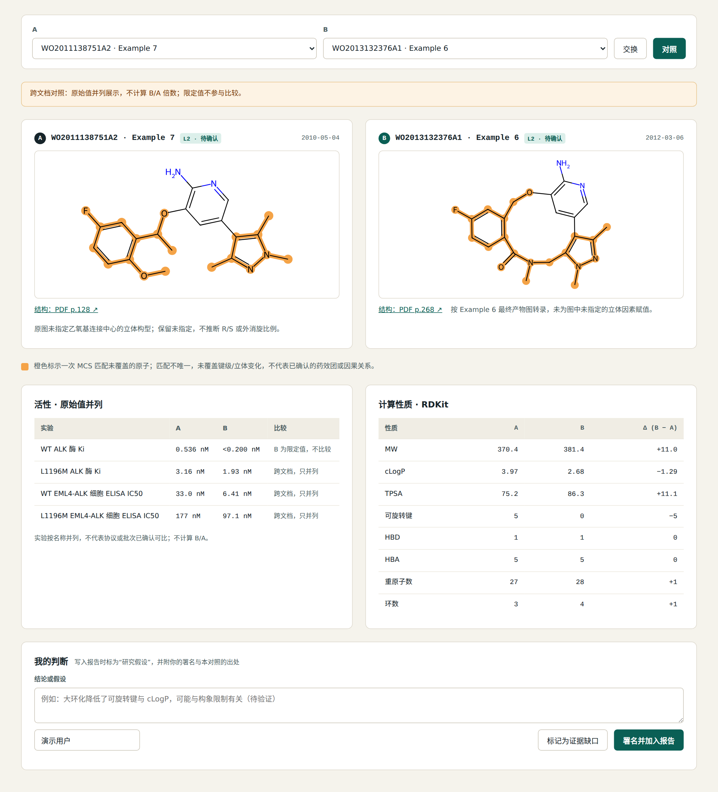
跨家族对照。橙色是一次最大公共子结构匹配未覆盖的原子；页面注明匹配不唯一，不代表药效团或因果关系。底部“我的判断”可以署名写入报告，标为“研究假设”或“证据缺口”。
讲解要点
“大环化后提高了几倍”是最容易被直接算出来的数，但两份专利的实验批次没有核实可比，所以只并列、不算倍数。同一个规则在操作时就提示：选完 A/B，底栏马上告诉你这是“同一文档”还是“跨文档”。
场景 3 · SAR 分析
活性提高了，其他性质付出了什么代价
“我的目标是改善细胞活性，同时把外排比控制在 2.5 以内。竞对的哪些结构改动值得借鉴，哪些有代价？”
操作
- 切到“SAR 分析”，目标模板选“改善细胞活性，同时控制外排”。
- 在“性质与实验映射”里把外排比改为“目标区间”，上限填 2.5；需要时勾选或去掉实验。
- 点“确认映射并重新分析”，设置保存到调研，概览和报告都用这一套目标。
- 看排在最前的替换、补测建议；在“审查与署名”写下判断并署名。
- 想看单个分子对的全部实验，到“对照”页选论文中的 6f 与 6e。
看什么
- 自动配对（匹配分子对，单切与氢替换）找到 18 个分子对、15 种替换；只比较同一文档内的实验，不合成综合分数。
- “去掉一个 N-甲基”（
C[*:1]>>[H][*:1]，2 个分子对）归为“取舍”：酶活性证据“不一致”，外排比“较弱”，细胞活性“无可比数据”。
- 6f → 6e：WT ALK Ki 22 → 2.8 nM（B/A 0.127）、L1196M Ki 310 → 35 nM（B/A 0.113）有利；MDR1 外排比 7.6 → 17（B/A 2.24）不利，两者都不在 ≤ 2.5 区间内；LogD 2.1 → 2.1 未变。
- 6f 没有细胞 IC50 记录，所以补测建议第 1 位是“6f · 细胞活性”（CHEMBL3293164，补测后可判断 2 个分子对，该实验已有 27 条测量）。
- 对照页：LogD 是对数尺度，不算 B/A；微粒体清除率单位无法确认量纲，也不算。
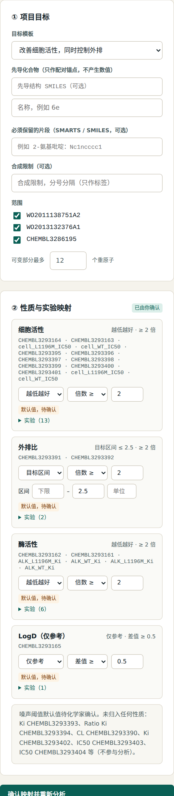
目标与实验映射。阈值默认值标“待确认”，用户改过的标“用户设定”；映射确认后显示“已由你确认”。
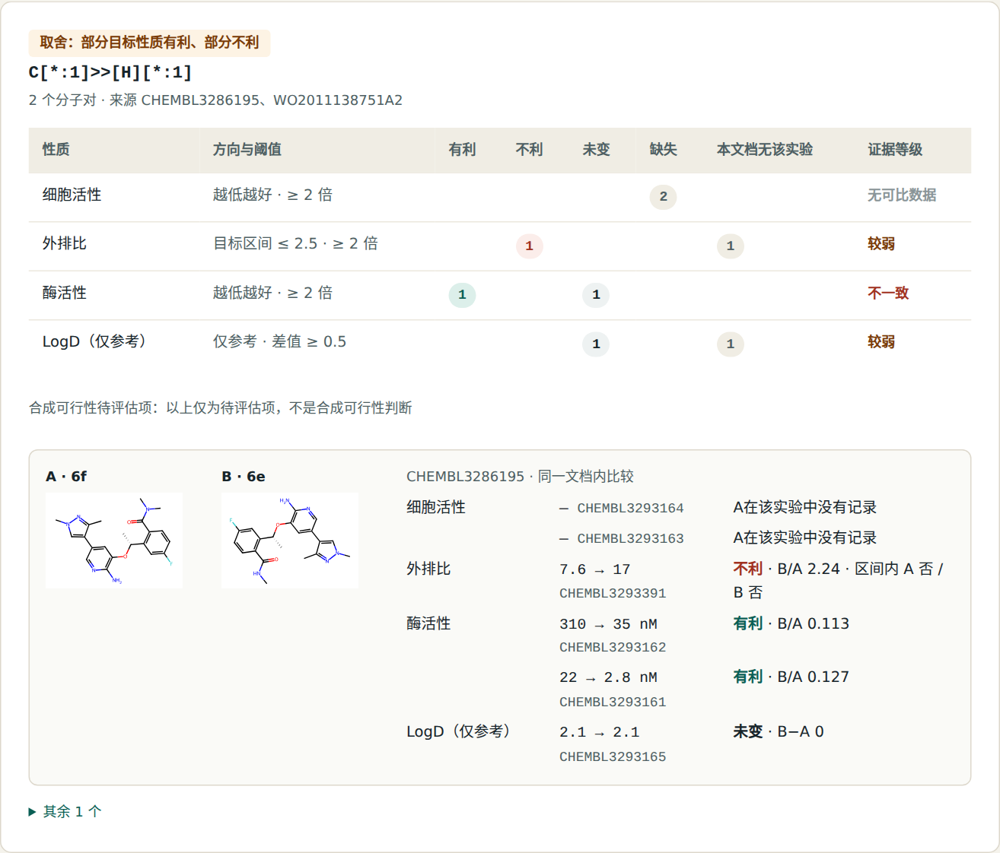
按替换汇总。每个性质一行：有利 / 不利 / 未变 / 缺失 / 本文档无该实验的分子对数，以及按固定规则给出的证据等级。
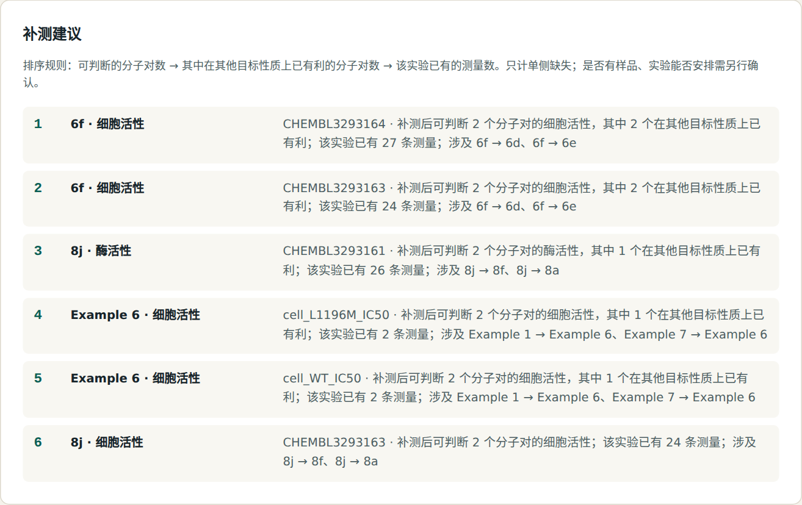
补测建议。排序规则写在标题旁：可判断的分子对数 → 其中在其他目标性质上已有利的对数 → 该实验已有测量数。是否有样品、能否排实验另行确认。
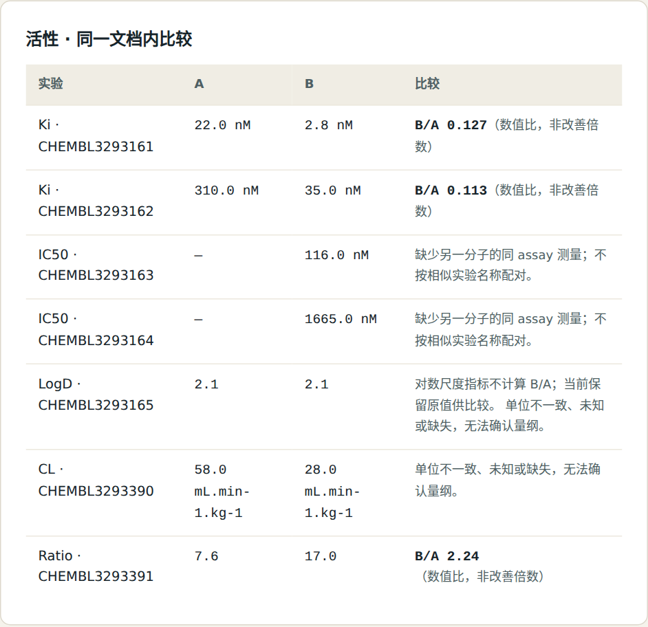
同一文档内的 A/B 对照。同来源、同实验、同单位的精确值才给 B/A，并注明“数值比，非改善倍数”；缺一方测量、对数尺度、单位不明的都写明不计算的原因。
讲解要点
把这批数据直接交给大模型总结，很容易得到“去 N-甲基提高活性”一句话，外排变差和细胞数据缺失却被略过。这里每个性质单独判断，取舍并排放在一张表里，并把“缺什么数据”变成一条可执行的补测建议。化学家的判断要署名后才以“研究假设”进入报告。
场景 4 · 结构检索
从一个结构找回同一条研发线
“手上只有洛拉替尼的结构，能不能找出它前面那一代化合物和专利？”
操作
- 首页点“结构检索”，粘贴洛拉替尼 SMILES；左侧立即显示本机解析结果。
- 匹配方式选“相似性”，阈值填 50，检索范围只留本地台账，点“检索 →”。
- 再用两代共有的氨基吡啶苄醚片段
Nc1ncccc1OCc1ccccc1 做子结构检索。
看什么
- 解析结果：C21H19FN6O2、MW 406.4、1 个立体中心已指定 R、单组分，“结构未离开本机”。
- 勾选联网来源前，页面写明会向 ChEMBL、SureChEMBL 发送什么（InChIKey 或标准化后的 SMILES）。
- 相似性 ≥ 50%：15 个命中，WO2013132376A1 的 Example 2、4 和论文 13 个化合物；早期专利 WO2011138751A2 一个都没有。
- 子结构：28 个命中，两份专利的 6 个实施例全部找回，另有论文 22 个化合物。
- 结果页先给检索覆盖报告：哪些来源查了、命中多少、是否截断，以及已知缺口；每个命中标出是否已在调研中。
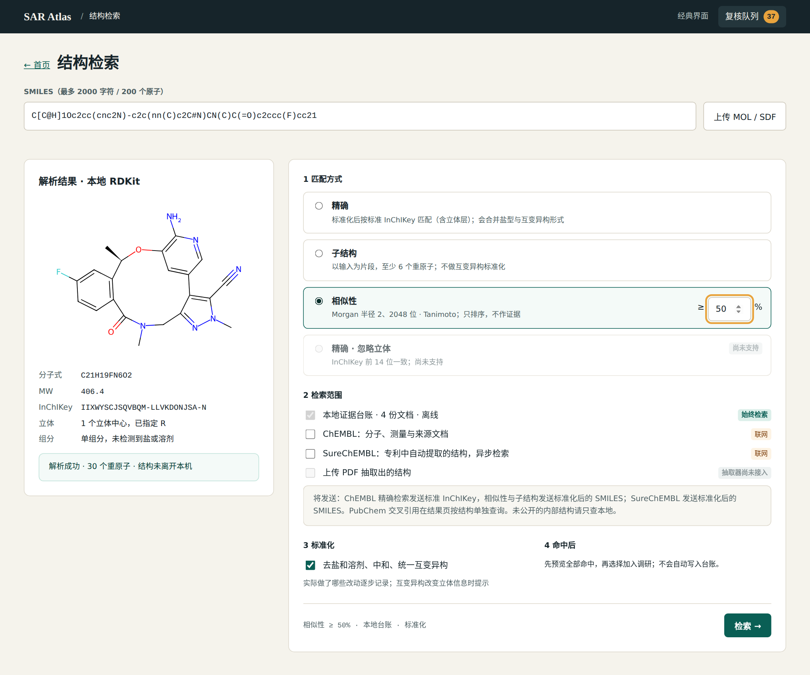
检索条件。“精确 · 忽略立体”和“上传 PDF 抽取出的结构”标为尚未支持，不放占位结果。
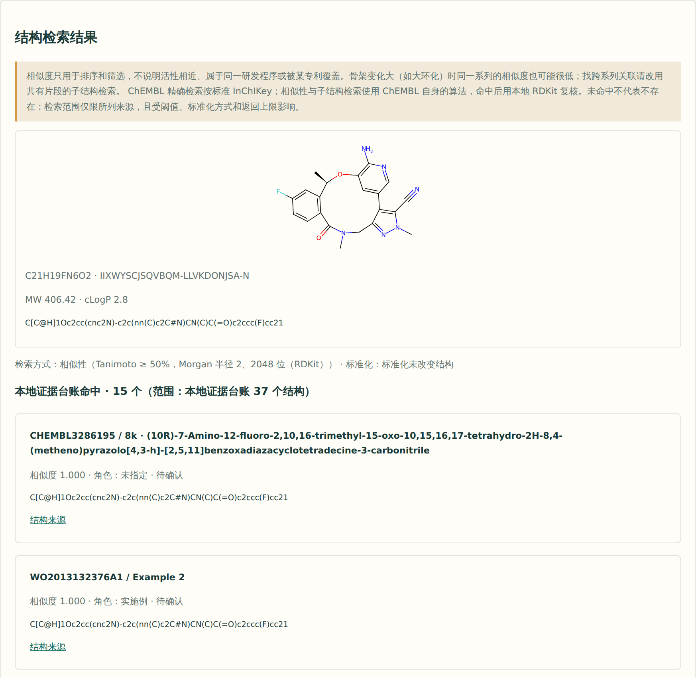
相似性 ≥ 50%。前两个相似度 1.000 的命中是同一个化合物在专利（Example 2）和论文（8k）中的两条记录。
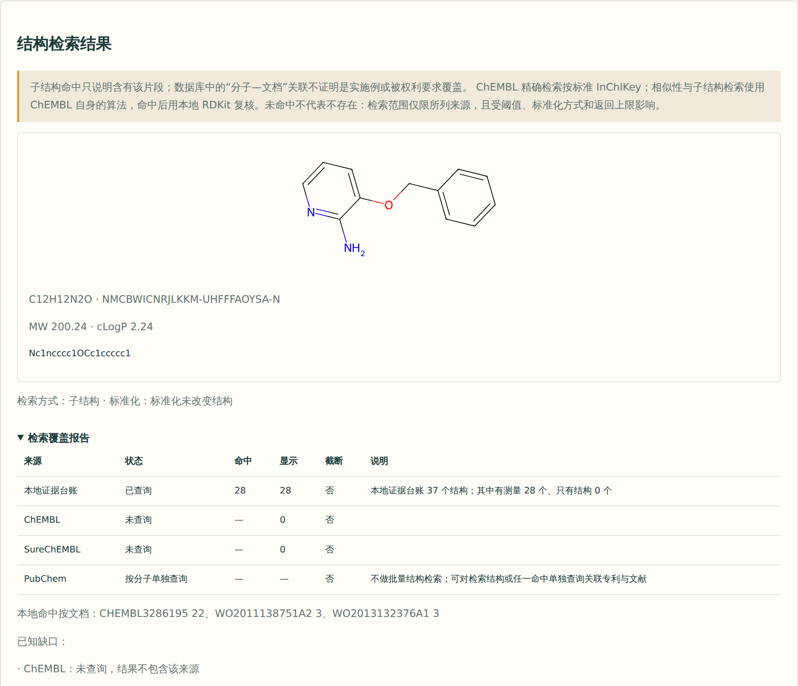
共有片段子结构检索。早期专利的 Example 1、6、7 都在结果里。
讲解要点
相似度适合找类似物，不适合找骨架跃迁：大环化之后，同一条研发线的前代化合物相似度会很低。联网时同一页可以勾选 ChEMBL 和 SureChEMBL，并对检索结构查 PubChem 关联的专利与文献；远程命中都会用 RDKit 在本地复核，不一致标红不删除。
场景 5 · 时间线与程序
两代专利之间改了哪里
“从 2010 年的无环系列到 2012 年的大环系列，具体在哪些位置做了改动？”
操作
- 切到“时间线与程序”页签。
- 看时间轴和引用箭头，再看下方的 R 基团对齐表。
看什么
- 时间轴按优先权日摆放两个家族；虚线箭头标“引用（来源：较晚专利引用列表）”。
- R 基团对齐：共同锚点 14 个原子，覆盖 6/6 个实施例；标“暂定对齐”。
- 黄色标出与同家族上一行不同的位点；多连接点片段标“成环”，大环家族的 R1、R3 为同一个成环片段。
- 每行附 WT 细胞 IC50 原始值，早期 Example 6 写“未测”。
- “为什么归为一组”需要读取专利公开页面后才计算，离线时只说明规则。
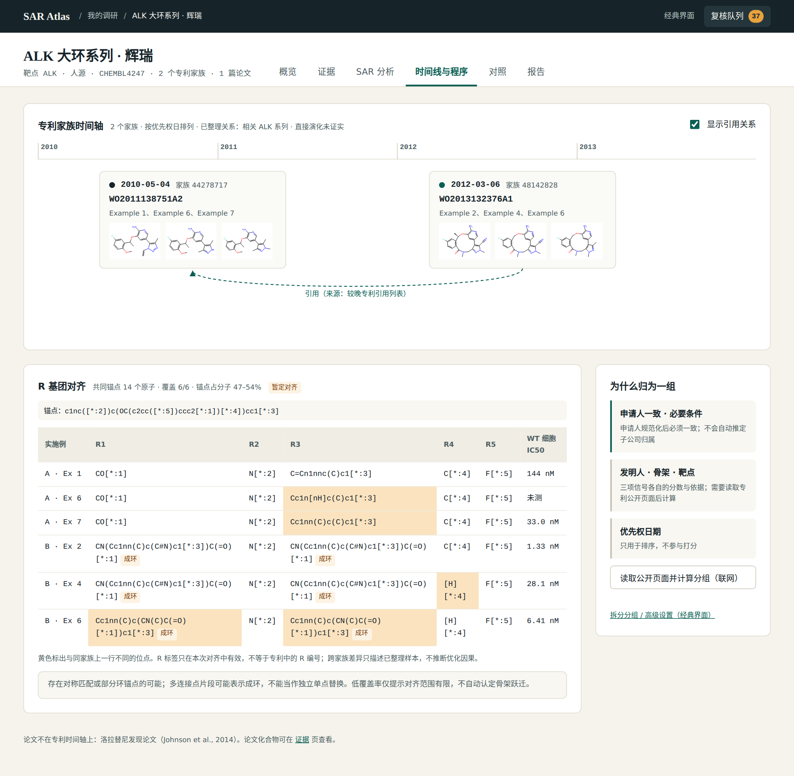
时间线与 R 基团对齐。页面写明 R 标签只在本次对齐中有效，不等于专利中的 R 编号；跨家族差异只描述已整理样本，不推断优化因果。
讲解要点
对齐只告诉你“哪里不同”，不告诉你“为什么改”。存在对称匹配、部分环锚点或成环片段时，页面明确提示不能当作独立单点替换。
场景 6 · 复核队列与报告
组会前：具名复核，再导出报告
“明天组会要汇报这个系列。哪些证据我能放心引用？报告里怎么区分已核对和没核对的？”
操作
- 点顶栏“复核队列”，在“专利证据卡 · 6”里选 WO2013132376A1 · Ex 2。
- 中间可按需加载原文 PDF（结构 p.260、活性表 p.436）；右侧按 Y 逐项勾选核对清单。
- 填写复核人和理由，点“确认（L3）”。
- 回到调研的“报告”页签，写结论摘要并署名，选择格式导出。
看什么
- 核对清单按记录生成：连接关系、立体（原图与名称指定 10R）、4 项测量与原表一致且限定符保留、实验列对应、编号对应。
- 质谱校验：原文 [M+H]+ 407.0，结构计算 407.16，一致；页面注明它查不出同分异构与立体错误。
- 勾选并填写复核人和理由之前，确认按钮不可用；拒绝只让记录退出分析，不删除。
- 报告页：已确认证据 1 条，其余 34 条标“待确认”；附录里 Example 2 显示为 L3，其他实施例带“待确认”。
- 报告第 3 节是在证据页选的 A/B（Example 7 与 Example 6），第 5 节列出场景 3 中署名的判断，附录有每份文档的快照 SHA-256。
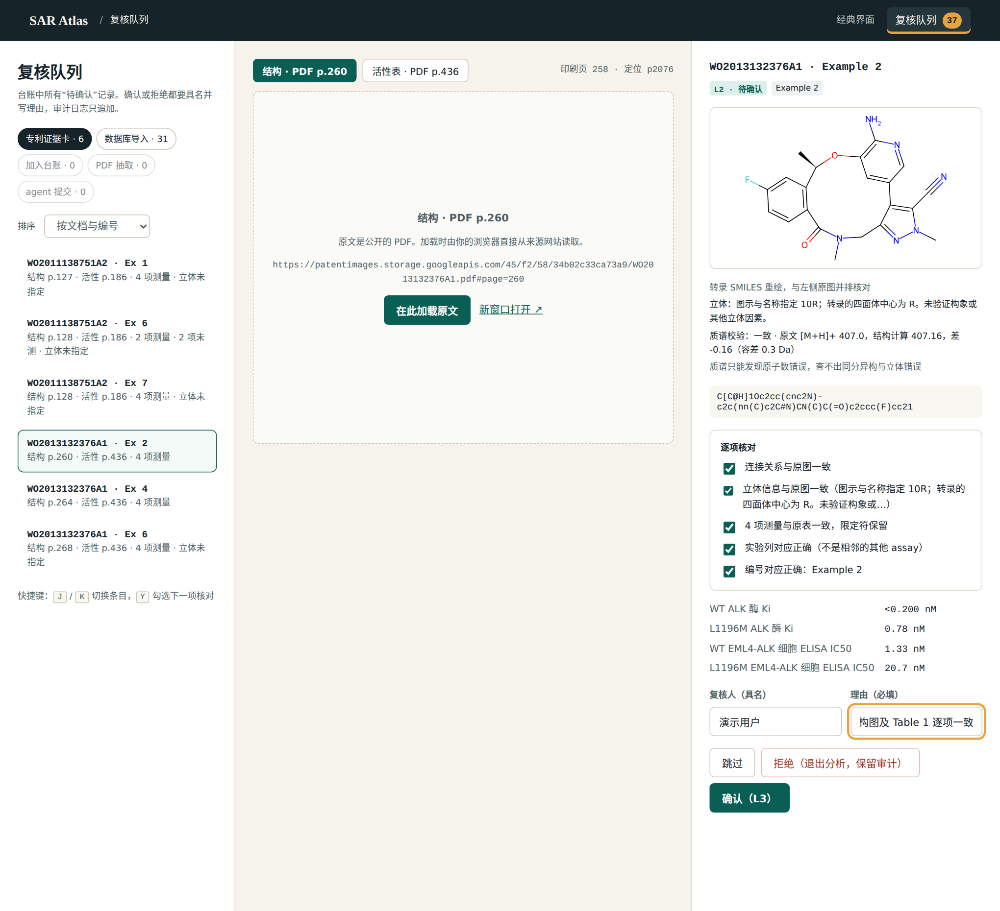
复核队列。原文 PDF 由浏览器直接从公开地址读取，点“在此加载原文”才加载。
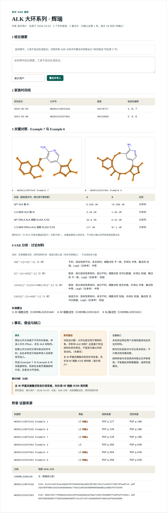
报告预览。工具不自动生成结论；结论摘要由人撰写并署名。导出 PDF 走浏览器打印，Markdown 与 JSON 直接下载。
讲解要点
每条记录都带复核状态，确认必须具名并写理由，审计日志只追加。报告不会把“待确认”的转录当成定论：每处引用都带状态，附录能逐条回到 PDF 页码。
场景 7 · AI 助手工具层
让 AI 助手帮忙整理，但它只能提交“待确认”
“如果让 AI 助手来帮我查数据、录数据，它会不会自己把数据‘确认’掉，或者自己算出一个倍数？”
操作
- 终端运行
python -m phase0.tools.demo。
- 这是一段脚本化的助手会话，调用的是 Claude Code 等客户端通过 MCP 使用的同一套工具（共 17 个）。
看什么
- 第 4 步：同一专利、同一实验的 WT Ki，2.9 → 0.536 nM，暂定 B/A = 0.185，并注明“不是改善倍数”。
- 第 5 步：助手提交一条记录，状态只能是“待确认”，写入者是本次运行，附依据“PDF p.186 Ki 表 Example 7 行”。
- 第 6 步：助手试图直接提交“已确认”记录，被拒绝。第 7 步：参数名拼错，直接报错，不会变成不带筛选的查询。
- 多了一条 WT Ki 之后，比值不再计算：存在重复观测，不自动取平均。
- 最后在断网状态下重放整个会话，8/8 次调用结果一致。
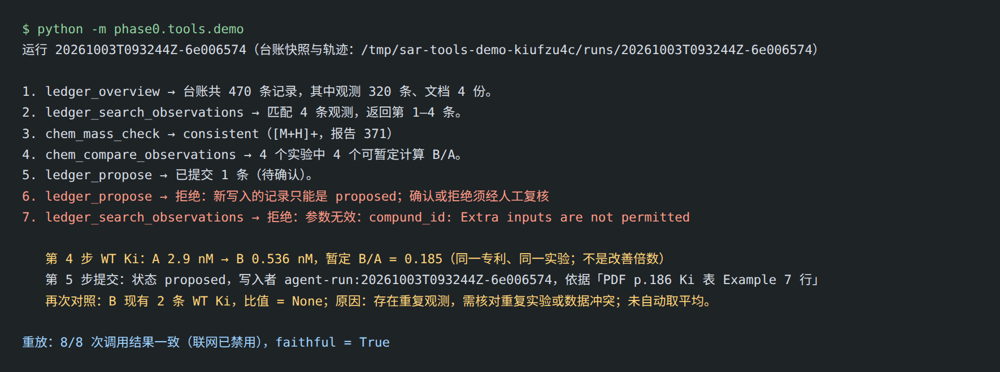
工具层演示的真实输出。红色是被拒绝的两次调用，黄色是比值与重复测量阻断，蓝色是重放结果。
讲解要点
工具里没有“确认”“拒绝”“导入”，约束写在工具边界上，而不是写在提示词里；确认只能由具名的人在复核队列里完成（场景 6）。这段会话是脚本化的，还没有接入真实大模型跑过。
场景 8 · 从 PDF 开始与抽取质控
从 PDF 开始：自动抽取出错时会被标出来
“以后我直接丢 PDF 进来、大量靠自动抽取，抽错了我怎么知道？”
操作
- 首页点“拖入专利或论文 PDF”，选一个 PDF 文件。截图用的是名为
WO2011138751A2.pdf 的测试文件，不是真正的公开 PDF。
- 终端运行
python -m phase0.extract.demo，看分级抽取的控制逻辑如何处理一个有错的抽取结果。第一行写明抽取器是模拟的，Example 6 故意漏掉一个氟原子。
看什么
- 上传页在浏览器里计算 SHA-256，与台账记录的公开 PDF 哈希比对；对不上就只按文件名推测公开号，并写明“未核实，文件名不作证据”。
- 页面分区、逐级抽取、写入台账三步标为“未接入”，不生成假的抽取预览。
- 抽取演示的页面分区：中间体在 PDF 第 125 页，实施例在第 127–128 页，活性表在第 186 页。
- 分级调用：结构化记录和专利全文补齐必填字段后，最贵的 PDF 图表识别没有调用。
- “需要人工核对”第一条：Example 6 置信度 low，原因是质谱不符（mass_mismatch）。评测：错误 1 个，其中未被标出的 0 个。
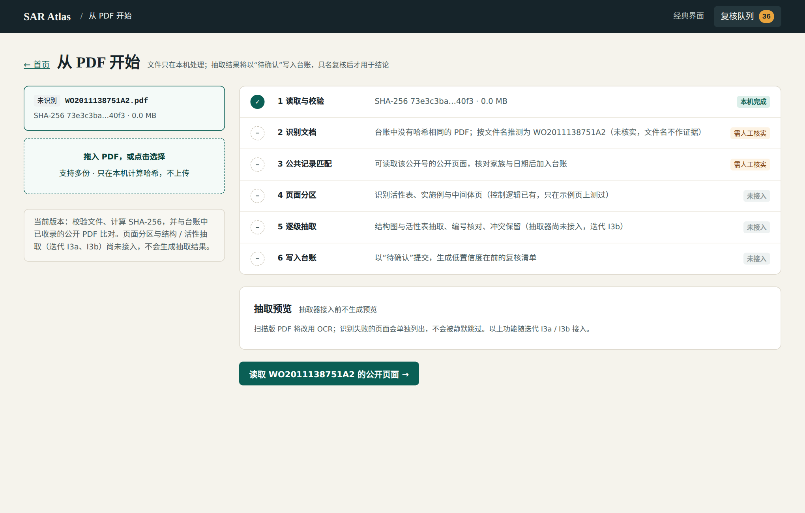
从 PDF 开始。文件只在本机处理；识别出公开号后可一键去读取公开页面核实。
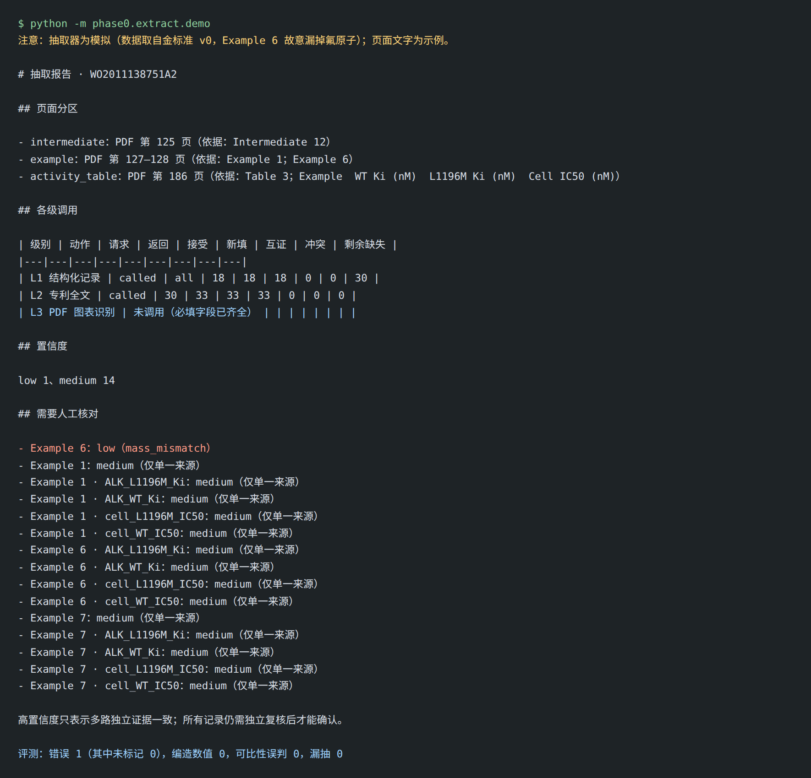
分级抽取演示的真实输出。核心指标不是平均准确率，而是“错了但没被标出来”的数量。
讲解要点
质谱校验能抓住原子数错误，但查不出同分异构和立体错误：两个来源给出同一个错误的异构体时，系统会给出高置信度，这个盲区已经写成测试。所以金标准和化学家复核不能省。真实抽取器还没有接入，也还没有真实的抽取准确率。
未附截图
需要联网的场景
这些功能已经实现并用模拟服务器测试过，但还没有在联网环境中连通过。离线只能用虚构的返回数据截图，所以这里不附截图。在能联网的电脑上运行 python -m phase0.tools.verify_online 可以一次核对全部外部来源，之后按下面的路径现场演示或补拍截图。
| 场景 | 操作路径 | 讲解要点 |
|---|
| 从靶点到测量，再加入台账 | 首页输入 ALK → 进入经典界面的靶点检索 → 选人源 ALK → 查看测量 → “将本页测量加入台账（待确认）” | 数值由服务端重新读取；缺限定符、缺结构、文档类型不明的记录被拒绝并说明原因；重复点击不新增 |
| 在专利化学中找相似结构 | 结构检索勾选“SureChEMBL” → 某个命中点“查看含此化合物的专利” → “核实并加载” | SureChEMBL 的结构由自动标注从专利中提取，标为 L0，不说明是实施例或被权利要求覆盖；数据 CC BY 4.0，保留 SCHEMBL 编号 |
| 一个分子关联了哪些专利和文献 | 结构检索结果页左侧“查询 PubChem” | 已整理的两份专利标星；PubChem 与 SureChEMBL 的专利关联可能同源，并列显示，不当作两份独立证据 |
| 读取专利公开页面并计算分组 | 时间线页“读取公开页面并计算分组（联网）” | 申请人一致是必要条件；发明人、骨架、靶点三项信号分别给出分数与共同项，缺失信号不重新归一化 |